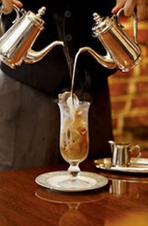
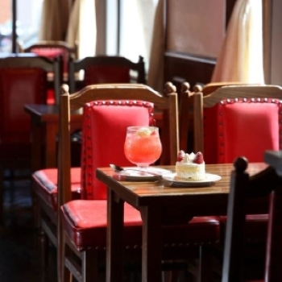
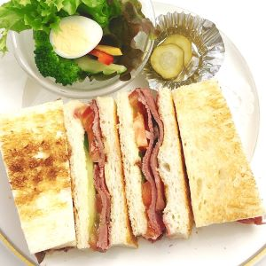

当店では、オールドビーンズを焙煎し本格的にネルドリップ方式で
淹れることで香り深いコーヒーを提供しております。
フランスの田舎風の落ち着きのある空間の中で、
極上のコーヒーや美味しい紅茶で様々な時を演出。
コーヒーはオーダーを受けてから豆を挽き、
一杯一杯丁寧にハンドドリップ。
極上のコーヒーと共に味わうスイーツは絶品です。
当店では農家さんから特別に厳選されたフルーツを扱っており、
品質にこだわりぬいた贅沢なフルーツパフェや、
他にもオリジナルのカフェメニューを幅広く取り揃えております。
こだわりの食材をふんだんに使用し、
食材の持つ味を最優先に考えて作られた味わいのスイーツは
すべて手作りで提供しております。
落ち着いた空間でゆっくりと味わいください。


旬の食材を取り入れた料理。
契約農家から仕入れた食材を中心に、手作りにこだわった料理をご提供。
2週間に1度メニューを入れ替え、
なるべく旬の素材を取り入れるようにしております。
定番の野菜がたっぷり入ったサンドイッチはオススメです。
ディナータイムにはお店がライトアップされ特別な空間へと変わります。
こだわりの料理の数々と豊富なドリンクメニューを揃え、
さまざまなコースを用意しているので、人数や予算に応じてご相談出来ます。
お誕生日のお祝いやサプライズ演出をご希望であれば是非当店にお任せください！